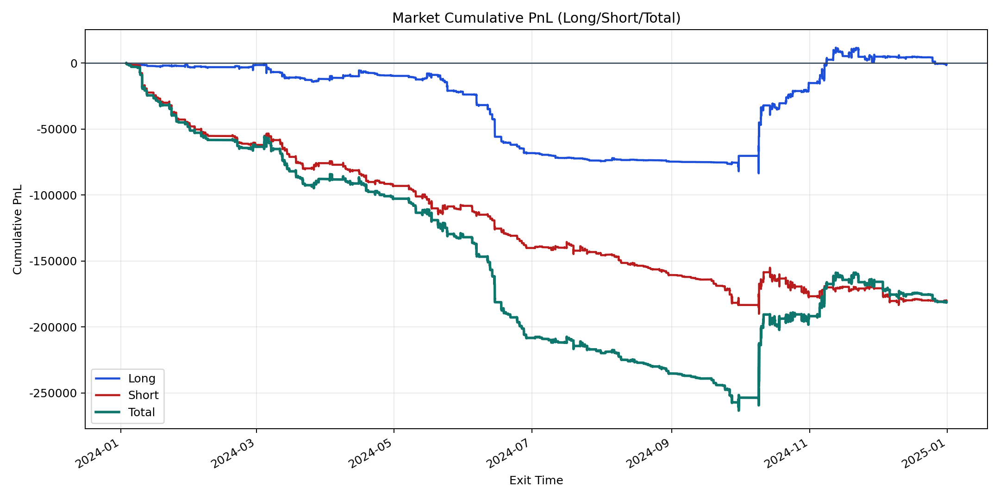
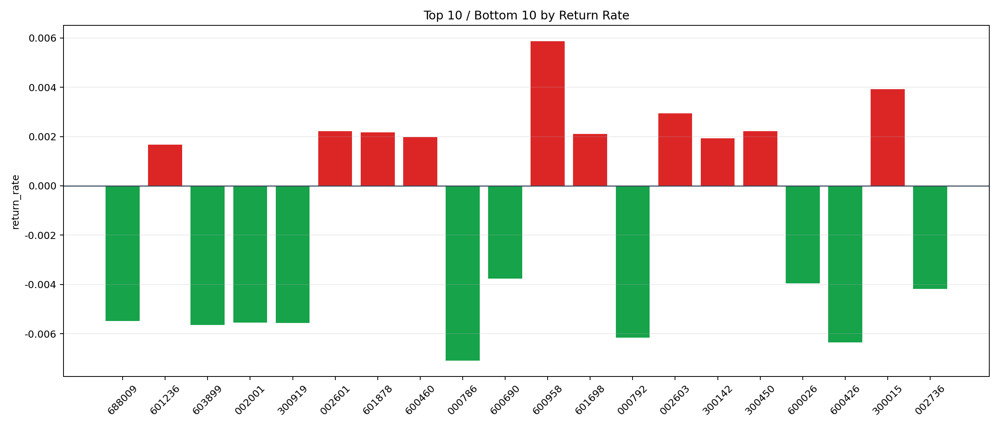

| repo_root | /home/haoranyou/data/output/alpha0.4_1w_5s_3ticks_index_filter/index_weights_300 |
|---|---|
| period_months | 12 |
| period_label | 2024-01-03_to_2024-12-31 |
| start_time | 2024-01-03 09:54:47 |
| end_time | 2024-12-31 14:36:17 |
| n_trades | 51167 |
| n_symbols | 121 |
| total_pnl | -181183.1631999995 |
| long_total_pnl | -1285.4983499998666 |
| short_total_pnl | -179897.66484999962 |
| total_entry_notional | 463486511.0 |
| long_entry_notional | 186500364.0 |
| short_entry_notional | 276986147.0 |
| total_return_rate | -0.00039091356253084027 |
| long_return_rate | -6.8927390940634655e-06 |
| short_return_rate | -0.0006494825347709524 |
| top_symbols_by_return | ["600958", "300015", "002603", "300450", "002601", "601878", "601698", "600460", "300142", "601236"] |
| bottom_symbols_by_return | ["000786", "600426", "000792", "603899", "300919", "002001", "688009", "002736", "600026", "600690"] |

